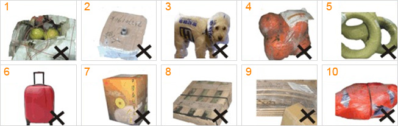

重新包装标准
（一）以下包装在外包装完好，不影响内件数量和质量的情况下，应当更换包装，如不经过重新包装出运，可能造成货物的遗失、破损，或因包装不规则造成体积重量超出预计，并产生可能的附加手续费。
1、不恰当的包装材料
2、使用带子、绳索或胶带进行缠绕的商品包装。拆除带子、绳索，附加气泡膜、包装箱等。
3、重复使用之盒子或箱子。必须去除包装外侧所有标签、号码、地址信息及一切有可能影响操作人员识别的粘贴物品和信息，无法处理的拆除原包装。
4、易破损的材料。如保丽龙、塑料、编织袋等。
5、公文包、行李袋、行李箱等。不接受公文包、行李袋作为外包装的货物。
6、强度不足的包装。不接受客户使用有压垮痕迹、有破洞及有油渍、水渍的使用过的箱子（不影响签收）对货物进行包装，以及受潮或强度不够的瓦楞纸箱。
7、商品包装。商品包装不能直接作为运输包装。
8、木质包装。
9、任何报刊、报纸、宣传海报等不能作为外包装。
